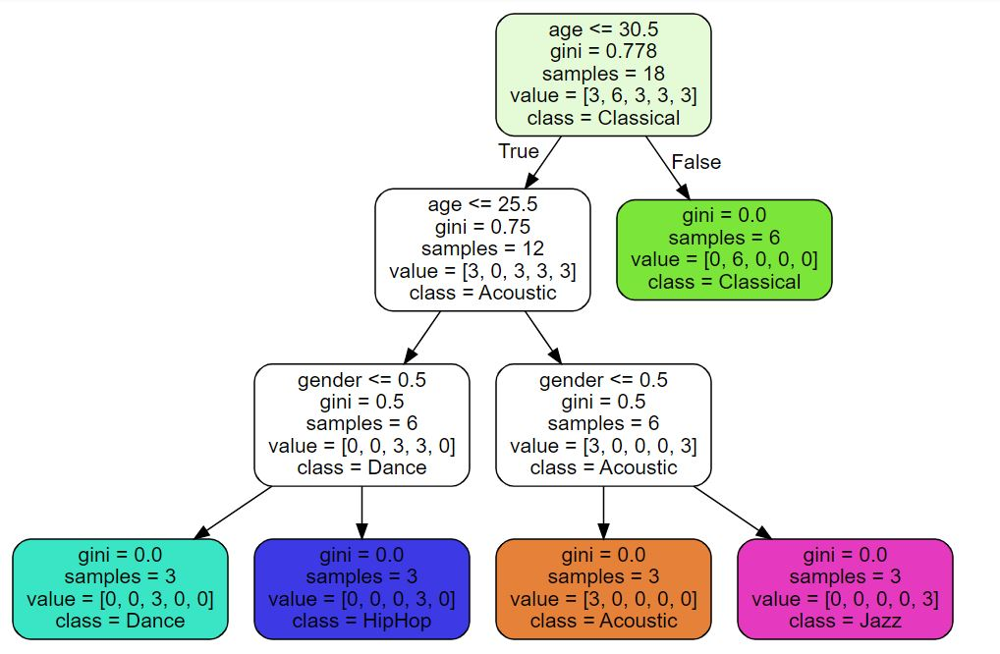

1. Bank Customer Churn Prediction
To identify and visualize which factor contribute to customer churn. To prediction if a customer is going to churn or not and based on model performance, choose a model that will attach a probability to the churn to make it easier for customer service to set their market segmentation strategy in their efforts to prevent churn.

2. Telco Churn Analytics and Prediction Project
To identify the issue that trigger customers to terminate their contracts, compare their current package features and also to predict churn on an individual customer based on discounts, special offer, current package, facilities etc.
3. Relationship Between Age and sysBP & sysBP and diaBP
This is to test the relationship between aging and sysBP and diaBP with the 10 year risk of Coronary Heart Disease, which showing whether the aging and high blood pressure might cause the Coronary Heart Disease in the 10 year of period
4. Prediction of Chronicle Heart Disease after 10 years based on current health, smoking habit and age
Prediction of the risk of 10 year Coronary Heart Disease by using supervised machine learning with decision tree.

5. Mini project to predict the music genre based on age and gender
Using machine learning algorithm to train and test the data to predict the interested on music genre based on age and gender.
6. Social Media Advertising Forecasting
To predict the impact of social media advertising on sales, which social media platform to have more budget and which platform to have less budget compared to each other.
7. Sentiment analysis on TripAdvisor
To identify what is the most concern issue for the tourist during vacation including positive and negative feedback or review. At the same time to find out what is the current problem that facing by the tourist and what action should be taken according the main issue.
8. Sentiment analysis by using NLTK for the insulting words used in the tweets by politician
Here using the example of the most popular words using by Trump in his twitter during Election Campaign toward media and his counterpart. What is the positive sentences and negative sentences different in his twitter post.